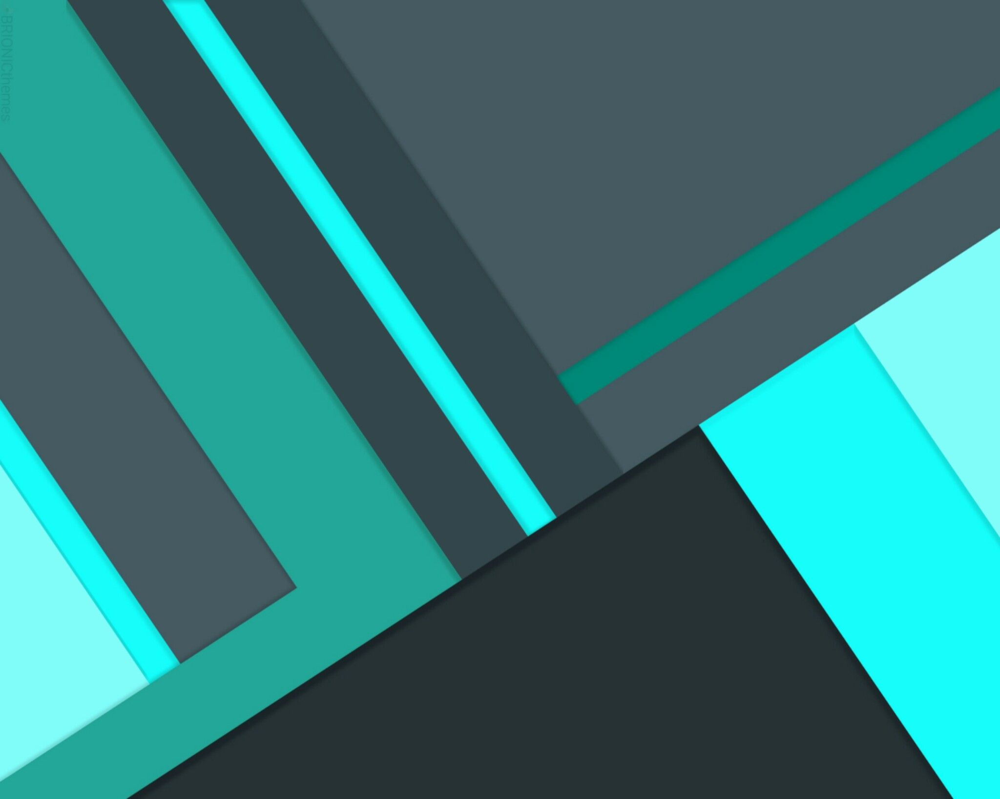
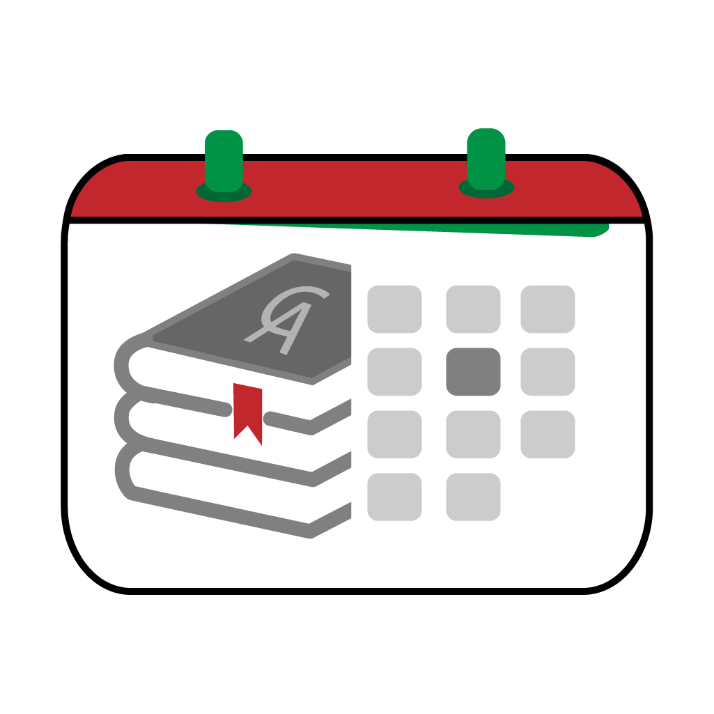

<ion-app>
  <ion-split-pane contentId="main-content">
    <ion-menu contentId="main-content" type="overlay" menuId="sidemenu">
      <ion-header>
        <div>
          <!--  -->
          
        </div>
        <!-- <div style="background:rgba(0, 0, 0, 0.18);">
          <p style="padding:8px;margin-bottom:0px">Jairo Roman</p>
        </div> -->
      </ion-header>
      <ion-content>
        <ion-list-header>
          <ion-item lines="none">
            <ion-avatar slot="start" color="primary">
              
            </ion-avatar>
            <ion-label>
              <h2>{{ nombreUsuario }}</h2>
            </ion-label>
          </ion-item>
        </ion-list-header>
        <ion-list>
          <ion-menu-toggle auto-hide="false">
          <ion-item
            [routerDirection]="'root'"
            routerLink="/home"
            lines="none"
            detail-icon="home"
          >
            <!-- <ion-icon slot="end" name="home" color="medium"></ion-icon> -->
            <ion-label>
              Principal
            </ion-label>
          </ion-item>
          <ion-item
            [routerDirection]="'root'"
            routerLink="/list"
            *ngIf="hide"
            lines="none"
            detail-icon="albums"
          >
            <!-- <ion-icon slot="end" name="albums" color="medium"></ion-icon> -->
            <ion-label>
              Materias
            </ion-label>
          </ion-item>
          <ion-item
            [routerDirection]="'root'"
            routerLink="/materias"
            lines="none"
            detail-icon="bookmarks"
          >
            <!-- <ion-icon slot="end" name="bookmarks" color="medium"></ion-icon> -->
            <ion-label>
              Mis Materias
            </ion-label>
          </ion-item>
          </ion-menu-toggle>
        </ion-list>
      </ion-content>
      <ion-footer>
        <ion-toolbar>
          <ion-item lines="none" (click)="logout()" style="cursor: pointer;">
            <ion-icon slot="end" name="log-out" color="medium"></ion-icon>
            <ion-label>
              Cerrar Sesión
            </ion-label>
          </ion-item>
        </ion-toolbar>
      </ion-footer>
    </ion-menu>
    <ion-router-outlet id="main-content"></ion-router-outlet>
  </ion-split-pane>
</ion-app>
